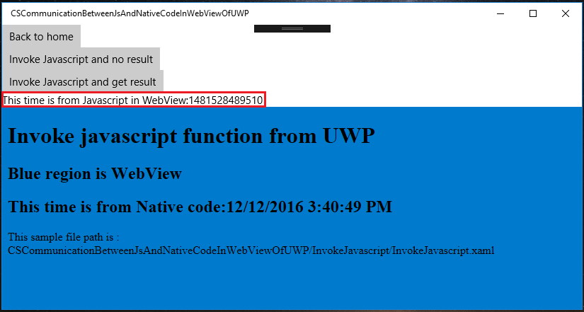
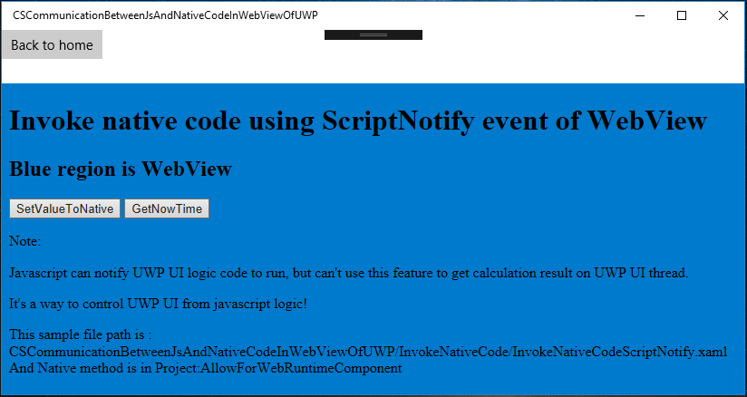
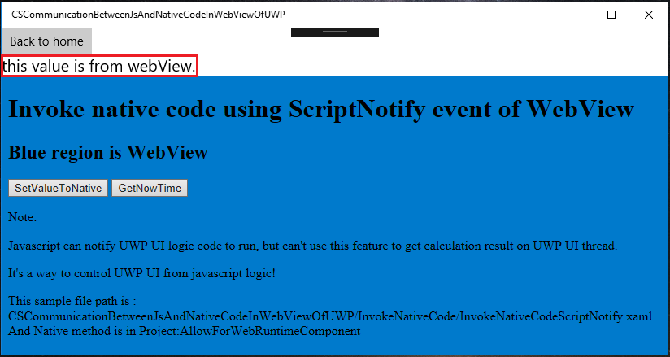
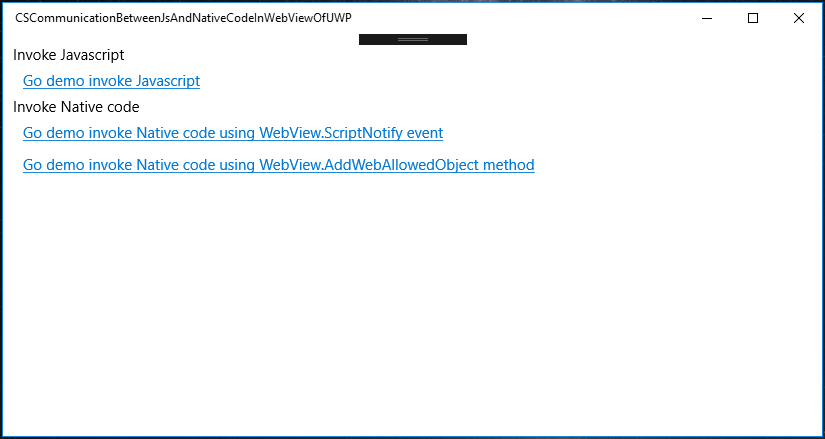

How to interoperate JS with native in WebView of Universal Windows Platform(UWP)
How to invoke Javascript (JS) at Native, and invoke native at JS in WebView of Universal Windows Platform (UWP)
Introduction
Hybrid is a popular shape of modern apps, and many people have asked about how to invoke JS at Native, and how to invoke Native in WebView.
This sample will demonstrate about this topic.
Sample prerequisites
To open and run the sample, ensure the following requisites have been reached:
• Microsoft Windows 10(10.0.14393) or above.
• Microsoft Visual Studio 2015 Update3 or later version(s).
• Microsoft Visual Studio installed UWP developer component.
Building the sample
• Open the sample solution “CSCommunicationBetweenJsAndNativeCodeInWebViewOfUWP” using Visual Studio.
• In Solution Explorer, right click the project “CSCommunicationBetweenJsAndNativeCodeInWebViewOfUWP” and select Set as StartUp Project.
Running the sample
• Use Visual Studio to open the sample solution, then press F5 Key or select Debug -> Start Debugging from the menu.
• When the app is running, you can see this:

Invoke Javascript
• Click Link “Go demo invoke Javascript” and go to the Invoke javascript function from UWP page.

• Click button Invoke Javascript and no result so that the app will invoke javascript function, and JS will change the html content.

• Click button Invoke Javascript and get result, app will invoke javascript function and get result to the app UI.

• Click button Back to home to go back home.

Invoke Native code
• Click link Go demo invoke Native code using WebView.ScriptNotify event.

• Click button SetValueToNative, JS will call the Native code with the parameter “this value is from webView.”. Besides, Native code will change the UI by the parameter.

• Click button GetNowTime, JS will call the Native code with no parameter, and Native code will generate a Date and the data will be printed to UI.

• Click button Back to home to go back home.

• Click Go demo invoke Native code using WebView.AddWebAllowedObject method.
The JS will call the Native code and get the result to the html.

Using the code
Invoke Javascript:
JS:
function invokeJSAndNoResult(param) {
var invokeJSAndNoResultContainer = document.getElementById("invokeJSAndNoResultContainer");
if (invokeJSAndNoResultContainer) {
invokeJSAndNoResultContainer.innerHTML = param;
}
}
function invokeJSAndNoResult(param) { var invokeJSAndNoResultContainer = document.getElementById("invokeJSAndNoResultContainer"); if (invokeJSAndNoResultContainer) { invokeJSAndNoResultContainer.innerHTML = param; } }
XAML:
<WebView Grid.Row="2" Name="MainWebView" Source="ms-appx-web:///InvokeJavascript/InvokeJavascript.html" />
<WebView Grid.Row="2" Name="MainWebView" Source="ms-appx-web:///InvokeJavascript/InvokeJavascript.html" />
C#:
private async void RunJsAndNoResultBtn_Click(object sender, RoutedEventArgs e)
{
string nowStr = string.Format("This time is from Native code:{0}", DateTime.Now.ToString());
try
{
//the first param is the function name of javescript,
//the second is the parameter of function
await MainWebView.InvokeScriptAsync("invokeJSAndNoResult", new string[] { nowStr });
}
catch (Exception ex)
{
MessageDialog showDialog = new MessageDialog(ex.Message);
await showDialog.ShowAsync();
}
}
private async void RunJsAndNoResultBtn_Click(object sender, RoutedEventArgs e) { string nowStr = string.Format("This time is from Native code:{0}", DateTime.Now.ToString()); try { //the first param is the function name of javescript, //the second is the parameter of function await MainWebView.InvokeScriptAsync("invokeJSAndNoResult", new string[] { nowStr }); } catch (Exception ex) { MessageDialog showDialog = new MessageDialog(ex.Message); await showDialog.ShowAsync(); } }
Invoke native code using ScriptNotify:
XAML:
<WebView Grid.Row="2" Name="MainWebView" ScriptNotify="MainWebView_ScriptNotify" Source="ms-appx-web:///InvokeNativeCode/InvokeNativeCodeScriptNotify.html" />
<WebView Grid.Row="2" Name="MainWebView" ScriptNotify="MainWebView_ScriptNotify" Source="ms-appx-web:///InvokeNativeCode/InvokeNativeCodeScriptNotify.html" />
C#:
private void MainWebView_ScriptNotify(object sender, NotifyEventArgs e)
{
//the notify value just a string,you can provide a format json,xml,or just a string
//in this sample I provide a string that is a json format,and I use it to simulation method route
JObject jo = JObject.Parse(e.Value);
string method = jo.SelectToken("method").Value<string>();
switch (method)
{
case "GetNowTime":
GetNowTime();
break;
case "SetValueToNative":
string param = jo.SelectToken("param").Value<string>();
SetValueToNative(param);
break;
}
}
private void MainWebView_ScriptNotify(object sender, NotifyEventArgs e) { //the notify value just a string,you can provide a format json,xml,or just a string //in this sample I provide a string that is a json format,and I use it to simulation method route JObject jo = JObject.Parse(e.Value); string method = jo.SelectToken("method").Value<string>(); switch (method) { case "GetNowTime": GetNowTime(); break; case "SetValueToNative": string param = jo.SelectToken("param").Value<string>(); SetValueToNative(param); break; } }
JS:
window.external.notify(JSON.stringify({ method: "SetValueToNative", param: "this value is from webView." }));
window.external.notify(JSON.stringify({ method: "SetValueToNative", param: "this value is from webView." }));
Invoke native code using WebAllowedObject:
At Windows Runtime Component(Universal Windows) project "AllowForWebRuntimeComponent".
[AllowForWeb]
public sealed class AllowFromWebExample
{
public int GetPlusResult(int param1, int param2)
{
return param1 + param2;
}
}
[AllowForWeb] public sealed class AllowFromWebExample { public int GetPlusResult(int param1, int param2) { return param1 + param2; } }
XAML:
<WebView Grid.Row="1" Name="MainWebView" NavigationStarting="MainWebView_NavigationStarting" Source="ms-appx-web:///InvokeNativeCode/InvokeNativeCodeAddWebAllowedObject.html" />
<WebView Grid.Row="1" Name="MainWebView" NavigationStarting="MainWebView_NavigationStarting" Source="ms-appx-web:///InvokeNativeCode/InvokeNativeCodeAddWebAllowedObject.html" />
C#:
private void MainWebView_NavigationStarting(WebView sender, WebViewNavigationStartingEventArgs args)
{
//This way can invoke native method and get result from native method.
//But because this native is from orther project in this solution, so when you operator UI, it will be very difficult.
sender.AddWebAllowedObject("AllowFromWebExample", new AllowForWebRuntimeComponent.AllowFromWebExample());
}
private void MainWebView_NavigationStarting(WebView sender, WebViewNavigationStartingEventArgs args) { //This way can invoke native method and get result from native method. //But because this native is from orther project in this solution, so when you operator UI, it will be very difficult. sender.AddWebAllowedObject("AllowFromWebExample", new AllowForWebRuntimeComponent.AllowFromWebExample()); }
JS:
var result = AllowFromWebExample.getPlusResult(1, 2);
var result = AllowFromWebExample.getPlusResult(1, 2);
More information
Web view introduction:
Microsoft All-In-One Code Framework is a free, centralized code sample library driven by developers' real-world pains and needs. The goal is to provide customer-driven code samples for all Microsoft development technologies, and reduce developers' efforts in solving typical programming tasks. Our team listens to developers’ pains in the MSDN forums, social media and various DEV communities. We write code samples based on developers’ frequently asked programming tasks, and allow developers to download them with a short sample publishing cycle. Additionally, we offer a free code sample request service. It is a proactive way for our developer community to obtain code samples directly from Microsoft.